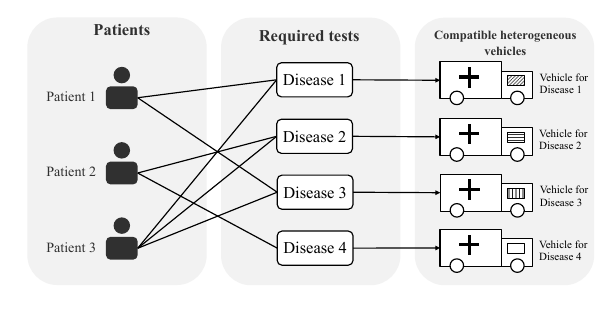
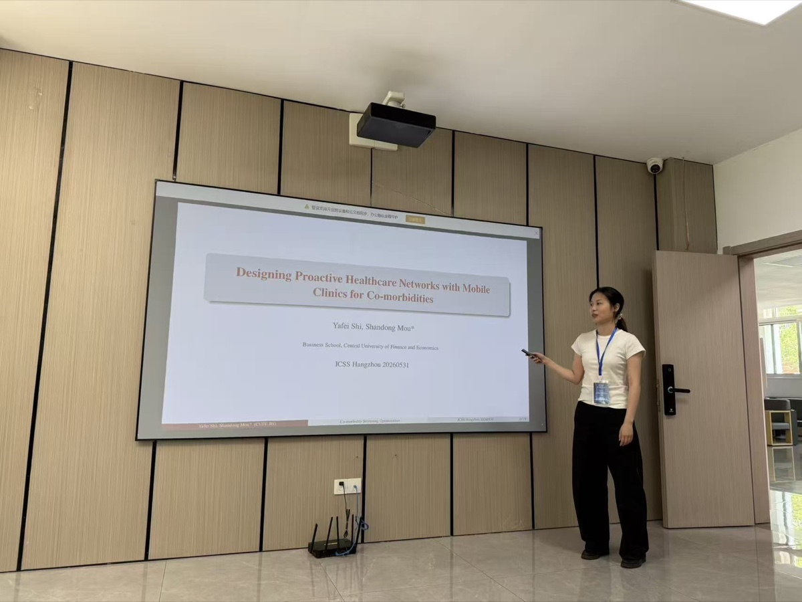
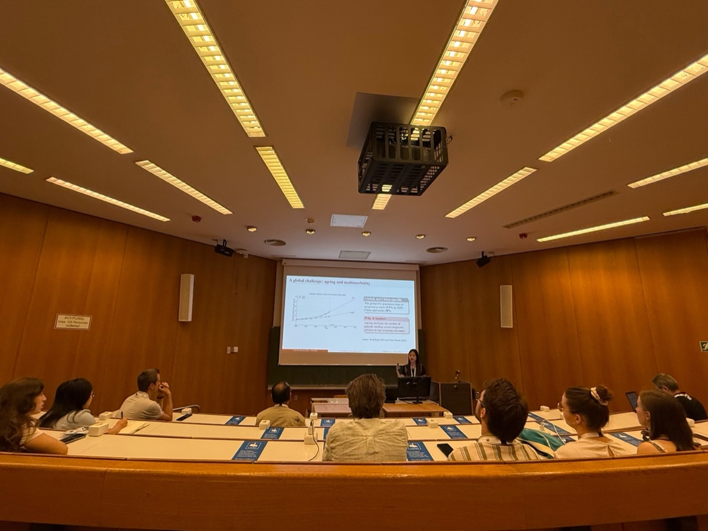

Master
M.S. in Technology Economy and Management, CUFE
Weighted Average: 92.33/100 · Rank: 1/10
yafeishi03@gmail.com

Seeking Ph.D. opportunities for Fall 2027
I am a Master's student in Technology Economy and Management at the Central University of Finance and Economics, advised by Prof. Shandong Mou. Prior to my Master's studies, I received my B.A. in Supply Chain Management from the same university.
Currently, my research interests focus on healthcare operations, routing and scheduling, and supply chain resilience.
M.S. in Technology Economy and Management, CUFE
Weighted Average: 92.33/100 · Rank: 1/10
B.A. in Supply Chain Management, CUFE
Weighted Average: 90.11/100 · Rank: 3/38
Advanced Operations Research (92), Business Data Analysis (95), Supply Chain Modeling & Optimization (96), Logistics Modeling & Simulation (97), Applied Statistics (93), and Python Programming (96)
IELTS Academic: 7.0
Listening 7.0 · Reading 8.5 · Writing 6.0 · Speaking 6.0 (Jul. 2026)
(Research in progress. † indicates corresponding author)



We study routing and synchronized service planning for heterogeneous mobile clinics screening rural patients for multiple chronic conditions. The solution approach includes an adaptive large neighborhood search algorithm.

We examine backup supplier qualification and sourcing decisions when delivery disruptions and co-opetition interact.